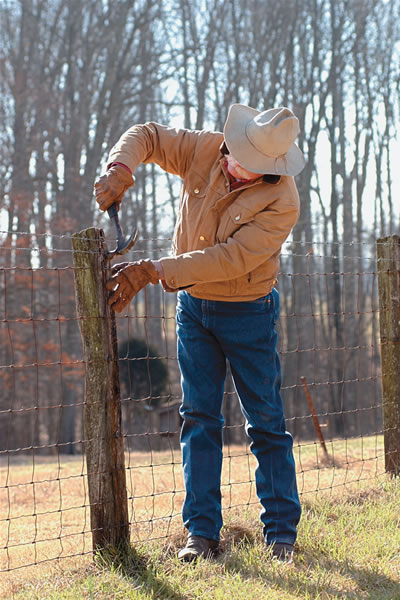
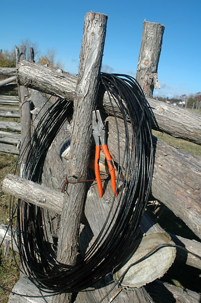
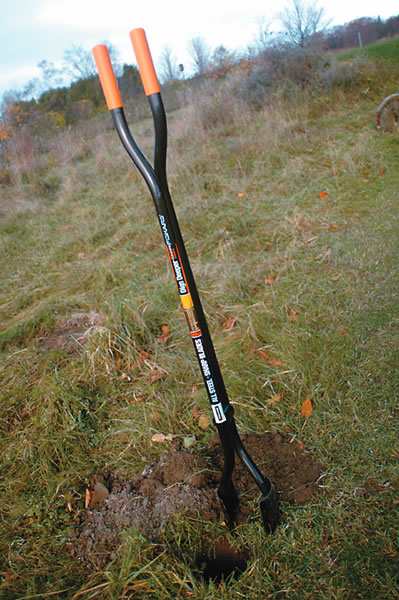
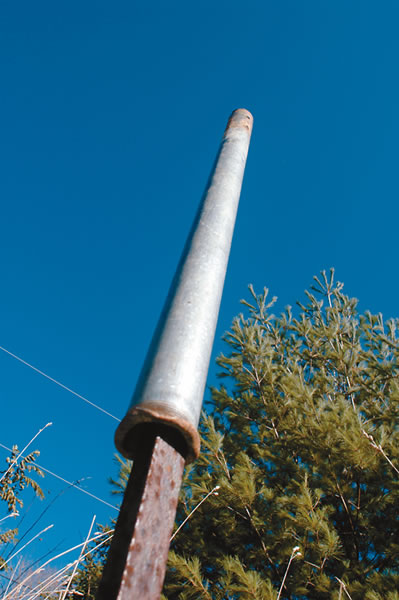
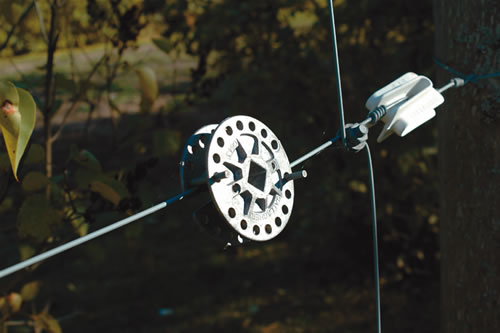
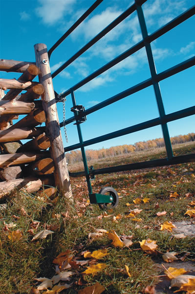

Best Tools For Fencing
By Steve Maxwell
February/March 2006
Many people with several acres eventually want to raise livestock. To contain animals on a pasture, you will need a good fence. The following tools will help you build a good fence and maintain it over time.
POST-SETTING TOOLS
If there’s a tool that’s most necessary for fence-building work, it’s something with which to dig postholes. Even if you plan to use metal T-posts-which you can just pound into the ground-you will need to dig deep postholes for the corner posts.
The easiest way to dig postholes is to use an auger powered by a tractor or built-in engine. An auger is a large shaft with spiral grooves that works like a giant drill bit for boring holes into the earth. If you don’t own an auger, you can rent one from a home-improvement store or see if a neighbor has one you can borrow. Tractor-driven posthole augers can quickly create the standard 8-inch-wide, 36-inch-deep holes required for corner and line posts in most soils.
Rocks are the bane of the fence-builder’s existence. Even medium-sized stones in the soil can stop the progress of a large auger, and may break the shear pin in the process. And unless the size of your auger specifically fits the diameter of the post, the posts won’t always fit well in their holes. That is why it’s a good idea to equip yourself with posthole-digging hand tools, at least as a supplement to any power auger.
If your fencing project is small, then hand tools might be all you need. The most basic tools for digging postholes are a long-handled shovel to loosen and remove soil, a heavy 6-foot pry bar to break up clods of earth and to tamp around your post, and a posthole digger. This tool is essentially two opposing shovels connected by a fulcrum. Fiskars makes a model with handles specially designed to dig deeper holes.
Setting your wooden posts perfectly plumb might not boost fence life by much, but the fence will look better. A post level makes this task easy. Strap the post level to the post (using large rubber bands), center both bubbles as you hold up the post and then fill in the soil around the outside. For wide holes, an 8-pound sledgehammer can be used to tamp the dirt and make your corner posts secure, or a long-handled poker or pry bar can be used for tamping down the soil around each post. Farmers often make homemade tampers from discarded automobile axles, as well. Because of the extra strain exerted on corner posts, it’s important that the tamping job around them is done well. As you fill the dirt back in around the post, tamp well after every few inches of added dirt.
|
 PICTUREQUEST A pair of pliers are essential for wire fencing. |
 STEVE MAXWELL The curved handles on this Fiskars posthole digger make it easier to dig deep. |
 MATTHEW T. STALLBAUMER Save money on a post pounder by building your own from leftover pipes. |
|
 STEVE MAXWELL This mechanical tightener stays fastened to the fence, making it easier to take up fence wire slack. |
 STEVE MAXWELL |
 STEVE MAXWELL |
|
 |
|
|